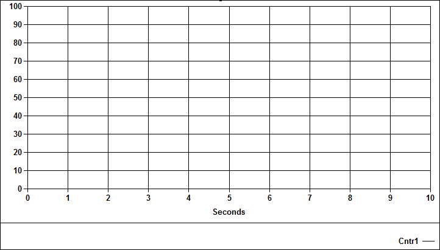
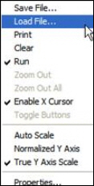

iTest User's Guide
The ADT Chart Plus display object combines features from both the ADT XY Plot control and the ADT Strip Chart control with some additional enhancements. The ADT Chart Plus control has two modes, XY Plot mode and Strip Chart mode. In XY Plot mode the control graphically plots the values of selected database channels over the specified X-axis channel. In Strip Chart mode, the control graphically plots the values of selected database channels over the specified time range.
ADT Chart Plus

General Tab
| Option | Description |
| Label Field | Label to use on chart. Note that the Automatic settings can be specified for both channel names and units by clicking Tools > Options in the iTest Console file menu. |
| Grid | Grid Lines to show (Integer: 0 – "Horz. And Vert. grid", 1 – "Horz.grid", 2 – "Vert.grid", 3 – "No grid"). |
| Control ID | Control ID for the given control (String). |
| Permit Runtime Changes | When selected, allows changes to be made programmatically. |
| Show Top Bar | Show top bar (Boolean). |
| Show Legend | Displays the chart legend on the object. |
| Show Units in Legend | Reports the units of measurement for that channel as long as the Show Legend field is selected. |
| Legend Location | Places the legend either at the top or bottom of the object. |
| Graph Border Style | Border style around the chart (String: "None", "Thick", "Thin"). |
X Axis Tab
| Option | Description |
| Chart Type | Type of chart (String: "Strip Chart", "XY Plot"). |
| Channel | Channel to use for the X-axis (XY Plot only) (String). Click the Channel... button to open the Channel Selection dialog. |
| Display Units | Display units (XY Plot only) (String). |
| X Axis Size (seconds) | X-axis size in seconds (Strip chart only) (Integer). |
| Sample Rate (Hz) | Sample Rate in Hz (Real). |
| Time Format | Displays the time format in either seconds, minutes and seconds, or hours, minutes and seconds. |
| Axis Min | Axis min (XY Plot only) (Real). |
| Axis Max | Axis max (XY Plot only) (Real). |
| Axis Label | Axis label (String). |
| Number of Grid Lines | Number of X-axis grid lines (Integer). |
| Label Interval | Interval for labeling X-axis grid lines (Integer). |
| Max Number Points | Maximum number of points to plot on the chart (Integer). |
Y Axes Tab
| Option | Description |
| Axis | Depicts which Y-axis is going to be affected by the channel list in the other settings. |
| Channels | Displays a channel list by opening the Channel Selection dialog box. |
| Axis Min | Defines the range on the Y-axis, and is relevant to all channels in the list. |
| Axis Max | Defines the range on the Y-axis, and is relevant to all channels in the list. |
| Axis Label | The vertical label that will appear on the side of each axis. |
| Number of Grid Lines | The number of rows in the chart. |
| Label Interval | The number of rows between labels on the X axis. When the Label Interval is 5, there will be 5 rows between labels. |
| Line Type | Select the type of line to display on the chart. This is on a per channel, per axis basis. |
| Line Width | Select the width of the line as it's drawn. |
| Point Type | The Point Type is the particular symbol you will use on the chart. This is only available if you are in XY Plot mode (Chart Type field on X Axis tab) because you need to be charting data points. |
| Point Size | Determines the size of the point as it's drawn. |
| Line Color | Allows you to choose the color of the line. |
When running the ADTChartPlus control in iTest Console, you can right-click on the control to bring up the following menu:
Right-Click Options

You can perform several standard actions in this menu. One of the more unique features is the Load File action, which allows you to overlay data from an existing DAT file onto the graph. In this case, iTest will continue to plot data onto the graph as scheduled, but you can now compare the data with the chart line from the DAT file you just loaded.
These properties are useful when issuing the following mailslot message:
\\.\mailslot\DisplayName>>$SETITEMPROPERTY ControlID PropertyName PropertyValue
The following are the names of the properties that can be changed by mailslot message to the display. These property names may or may not be the same as the property names shown on the display object property setup dialogs. Most of these property names are self-explanatory. The first column is the data type of the property.
The int or OLE_COLOR for color is the color RGB values. “BSTR” means the type of the property is string. “int”, “float”, “long”, “short”, “double” means the type of the property is number. “Boolean” means the property value should be 1 or 0.
Font property syntax is complicated.
<font name>,<bold>,,<italic>,<font size>,,<strikeout>,<underline>,
example: Arial,0,0,0,97500,0,0,0,400
ADT Chart Plus Object Properties
| Type | Property | Notes |
| string | ChannelName* | - |
| string | LabelField** | values are case-sensitive |
| string | ChartType | - |
| float | Rate | - |
| bool | ChangesOK | - |
| long | Points | - |
| long | GridLineControl | - |
| long | NumBufPages | - |
| long | ChartWidthSeconds | - |
| int | ManualMinX1 | - |
| int | ManualMaxX1 | - |
| int | ManualMinY1 | - |
| int | ManualMaxY1 | - |
| int | ManualMinY2 | - |
| int | ManualMaxY2 | - |
| int | ManualMinY3 | - |
| int | ManualMaxY3 | - |
| int | ManualMinY4 | - |
| int | ManualMaxY4 | - |
| long | NumberGridLinesX1 | - |
| long | NumberGridLinesY1 | - |
| long | NumberGridLinesY2 | - |
| long | NumberGridLinesY3 | - |
| long | NumberGridLinesY4 | - |
| long | LabelIntervalX1 | - |
| long | LabelIntervalY1 | - |
| long | LabelIntervalY2 | - |
| long | LabelIntervalY3 | - |
| long | LabelIntervalY4 | - |
| long | AxisChannel1 | - |
| long | AxisChannel2 | - |
| long | AxisChannel3 | - |
| long | AxisChannel4 | - |
| long | AxisChannel5 | - |
| long | AxisChannel6 | - |
| long | AxisChannel7 | - |
| long | AxisChannel8 | - |
| long | AxisChannel9 | - |
| long | AxisChannel10 | - |
| long | AxisChannel11 | - |
| long | AxisChannel12 | - |
| bool | ShowDigitalValues | - |
| long | GraphBackColor | - |
| long | GraphForeColor | - |
| long | DeskColor | - |
| long | ShadowColor | - |
| long | TextColor | - |
| long | XAxisColor | - |
| long | YAxisColor | - |
| font | LegendFont | - |
| font | LabelFont | - |
| string | LabelX1 | - |
| string | LabelY1 | - |
| string | LabelY2 | - |
| string | LabelY3 | - |
| string | LabelY4 | - |
| bool | ShowTopBar | - |
| long | MaximumNumPoints | - |
| string | XChannelName | - |
| string | BorderType | - |
| bool | ShowLegend | - |
| bool | ShowLegendUnits | - |
| long | LegendLocation | - |
| string | TimeFormat | - |